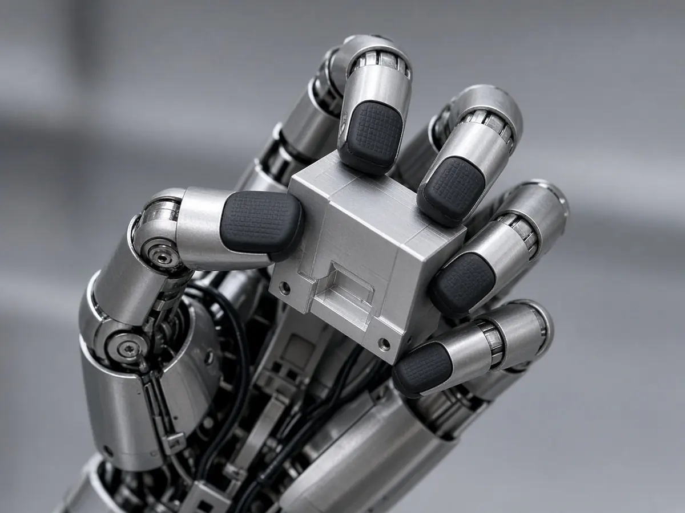

AgiBot
AGIBOT pitches 'Worken' as a measure of useful robot work and shows AHA3, GO-3 Preview and G2 Max
Short answer: AGIBOT used its Innovation Day 2026 in Shanghai on 29 October to argue that humanoid makers should be judged on the useful work their robots do, not on how many they ship, and it proposed a metric called Worken to measure that, according to the company's announcement. It also showed new hardware, AI models and an operating system plan.
According to AGIBOT, Worken (a blend of "work" and "token") stands for "Effective Intelligent Work Hours" and is calculated as the number of active robots multiplied by their autonomous working hours and an output-efficiency ratio. Co-founder, president and CTO Peng Zhihui introduced it, saying the real question for robots is "how much productive work are they actually delivering?", the company said.

On hardware, AGIBOT presented AHA3, the third generation of its AGIBOT Humanoid Architecture. The company lists Wi-Fi 6 and 5G connectivity, liquid cooling in the joints, IP67-rated joints, a family of OmniHand 3 hands (Lite, standard and Ultra) and an OmniPicker 3 gripper with tactile sensing. It also showed the G2 Max, which it says has 21 degrees of freedom, can handle up to 40 kg with both arms and works at heights from 0.1 m to 2.5 m.
On software, AGIBOT previewed GO-3, which it describes as a World Reasoning Action Model (WRAM), and WITA-Omni, a full-duplex interaction model designed to run on the robot. AGIBOT says GO-3 Preview placed first on the RoboDojo and RoboColiseum evaluations and scored highest on RoboTwin, and that WITA-Omni ranks first on Daily-Omni. Humanoids Daily notes that these rankings are reported by AGIBOT and were not independently checked.
AGIBOT also announced Link-U OS 1.0, a robot operating system that it says selected partners are trialling now and that will be fully open source by the end of 2026, with the project donated to the OpenAtom Foundation. The company says its developer ecosystem spans 255 universities, 511 enterprises and more than 80,000 developers.
The company pointed to work in tablet production for Longcheer, semiconductor packaging, CNC machine tending, Guangzhou Metro and the Chimelong resort group as examples of deployments, according to the announcement. Humanoids Daily adds that AGIBOT built its 20,000th robot in September 2026. AGIBOT previously drew attention with a 110-robot synchronised dance record; more Chinese humanoid coverage is on our China hub.